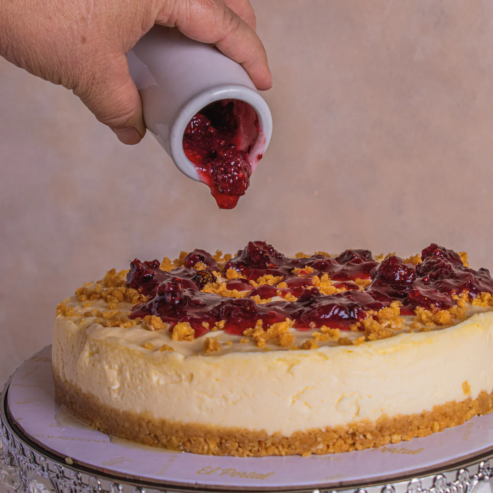

CHEESE CAKE: HISTORIA Y RECETA
Historia de uno de los postres más famosos del mundo
El cheesecake es un postre cremoso e irresistible y es probable que lo conozcas por su otro nombre: pastel de queso.
Es un plato muy reconocido en la cocina suramericana, aunque es mucho más famoso en la cultura norteamericana, pero en general son muchos los que se atreven a probar una rica torta de queso.
Su origen se remonta a la Antigua Grecia, específicamente a la isla de Samos.
Este tipo de alimento se consideraba algo más que una rica receta, era una fuente de energía para los primeros atletas olímpicos. Aunque la preparación era bastante sencilla; se calentaba el queso triturado en una cacerola de cobre con miel y harina para posteriormente dejarlo enfriar y servir; ya era un platillo favorito en la antigüedad.
Los romanos sólo usaban la receta en ocasiones especiales, y aunque esta delicia fue recorriendo Europa, a medida que Roma se expandía y luego sucumbía, no fue sino hasta el siglo XVIII cuando pasó a ser lo que conocemos hoy en día.

Ingredientes recomendados para elaborar un cheesecake
Como es común en recetas tan conocidas y antiguas, la variedad de formas y estilos son mucha; sin embargo, podemos encontrar consistencia general en los ingredientes para elaborar un cheesecake con una textura cremosa y suave:
- 1 Molde desmontable de 20 cm
- 300 gr de galletas trituradas
- 130 gr de margarina derretida
- 1 cucharada de miel
- 600 gr de queso crema
- 600 gr de leche condensada
- 180 ml de crema batida
Elaboración del cheesecake original paso a paso
No solo en Nueva York se puede disfrutar de un buen pastel de queso, tú también puedes elaborar tu cheesecake casero siguiendo estos pasos:
- Precalienta el horno a 160 grados centígrados.
- Coloca las galletas bien trituradas en un tazón junto con la margarina y la miel, mezcla todo esto hasta tener una consistencia arenosa, luego ponlo en el molde para hacer el cheesecake.
- Con la parte posterior de la cuchara, presiona la masa hacia los bordes, trata de nivelar la mezcla hasta tener una superficie lisa.
- Mientras se elabora el relleno, refrigera la mezcla en la nevera.
- Con un batidor trabaja sobre el queso crema hasta que quede suave y añade azúcar, para cuando esté cremoso.
- Agrega la crema batida, el yogurt y los huevos uno por uno. Cuando hagas esto último mezcla los huevos pero solo para integrar. Añade ahora el extracto de vainilla, la fécula de maíz tamizada y mezcla hasta que todo esté bien incorporado (sin batir demasiado).
- Con el molde ya preparado, vierte el queso crema y llévalo al horno por unos cincuenta minutos y coloca una bandeja con agua debajo del pastel para que el vapor mantenga el cheesecake húmedo mientras se cocina.
- Apaga el horno pero aún no saques tu pastel, abre la puerta del horno y déjalo allí por unos 35 o 40 minutos para que se enfríe. Luego sácalo y deja que se enfríe a temperatura ambiente.
- Refrigera por un mínimo de 3 horas con el pastel bien cubierto. Al sacar de la nevera separa los bordes, sácalo del molde y decora con fresas o ralladura de limón para acentuar los sabores del cheesecake. Sirve y disfruta.